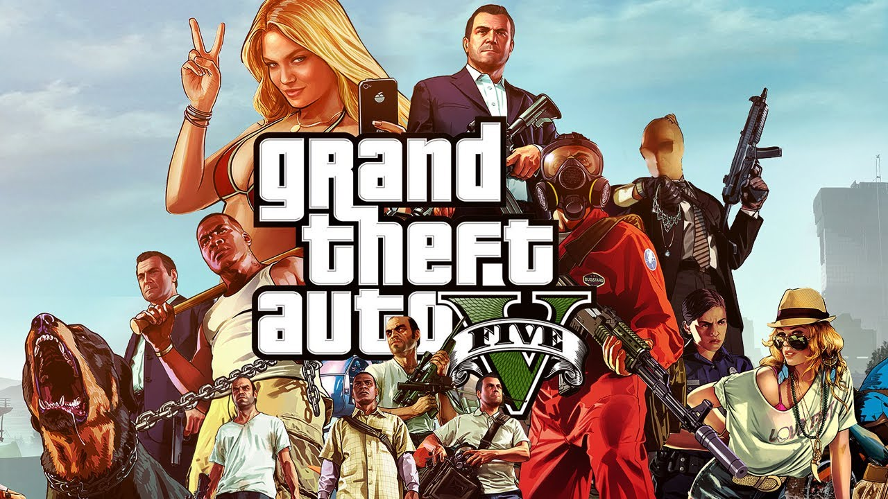

俠盜獵車手 V
|
發行日期 : 2013年9月17日
|
|
遊戲內容
本款遊戲為系列作的第5代，在人像與畫面的精緻度上有著大幅度的提升。其遊戲背景設定在虛構的美國聖安地列斯州（San Andreas，以南加州為範本），玩者可隨意地在荒漠間和虛構的城市洛聖都（Los Santos，以洛杉磯為範本）中漫遊。除此之外，本作使用多主角故事線的系統，使遊玩的過程更加豐富，玩家可任意在三個角色間進行切換。除了單人的劇情模式外，線上模式更是將俠盜獵車手V推上了頂點，玩家可以創造一個屬於自己的模擬角色，與朋友在遊戲中一起遊玩。極高的自由度與多元的遊玩模式使得本款遊戲成為系列作的巔峰作品。